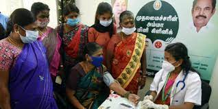

Amma Mini Clinic Scheme
The Amma Mini Clinic Scheme is an initiative by the Tamil Nadu government in India designed to improve access to primary healthcare, particularly in underserved and densely populated urban areas.
Objective
The core objective of the Amma Mini Clinic Scheme is to provide accessible and affordable primary healthcare services to communities that lack easy access to hospitals or clinics. It aims to bridge the gap in healthcare access, especially for those living in slums, remote areas, and other underserved pockets within cities.
Benefits
- Free Basic Healthcare Services: The clinics offer a range of essential healthcare services free of cost to patients. This typically includes:
- Outpatient care and consultations with doctors.
- Basic diagnostic tests (e.g., blood pressure measurement, blood sugar testing).
- Dispensing of essential medicines.
- Immunizations.
- Referrals to higher-level facilities when necessary.
- Increased Accessibility: The mini clinics are strategically located within communities to minimize the distance people need to travel to receive care. This is particularly beneficial for the elderly, pregnant women, and those with limited mobility.
- Reduced Waiting Times: Compared to larger hospitals, the smaller scale of the mini clinics often translates to shorter waiting times for patients.
- Improved Primary Healthcare: By focusing on primary care, the clinics help in early diagnosis and treatment of common ailments, preventing them from escalating into more serious conditions.
Other Details
Staffing: Each Amma Mini Clinic is typically staffed by a doctor, a nurse, and a pharmacist. This ensures that patients receive comprehensive primary care services.
Infrastructure: The clinics are usually housed in small, well-equipped buildings within the community.
Named after J. Jayalalithaa: The scheme is named after the former Chief Minister of Tamil Nadu, J. Jayalalithaa.
Implementation: The scheme is implemented by the Department of Health and Family Welfare of the Tamil Nadu government.
Criticisms and Challenges
Consistency of Service: Reports have sometimes highlighted inconsistencies in the availability of doctors and medicines at some clinics.
Scope of Services: As mini clinics, they are limited in the range of services they can provide. More complex cases require referral to larger hospitals.
Sustainability: Ensuring the long-term funding and smooth operation of these clinics can be a challenge.
Despite these challenges, the Amma Mini Clinic scheme has played a role in improving primary healthcare access for many in Tamil Nadu, particularly in urban underserved areas. Ongoing efforts to address the challenges and strengthen the program are crucial for its continued success.
